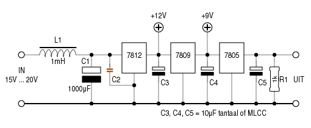
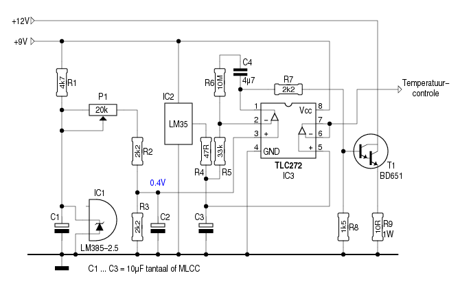
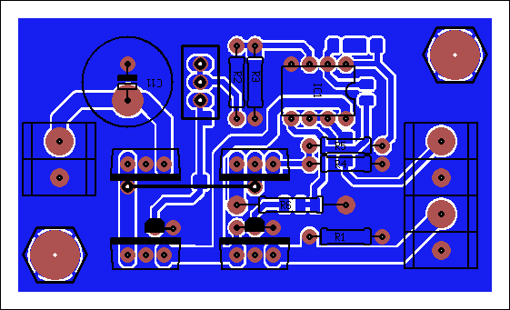
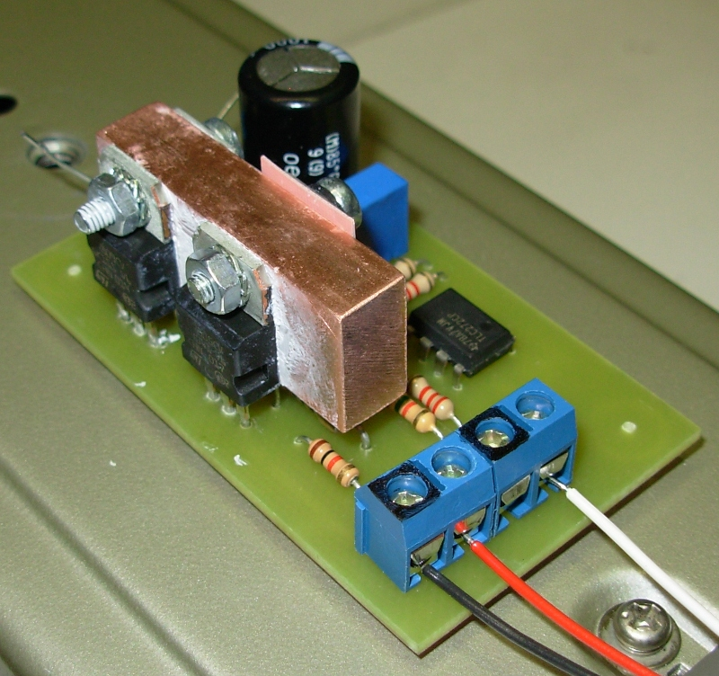
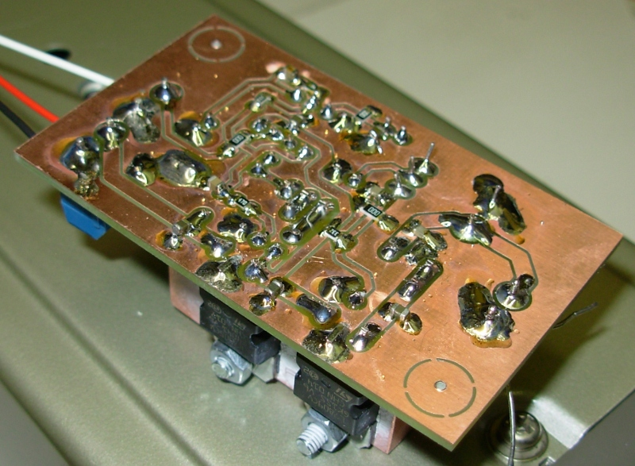

Eén van de problemen die ik bij zelfbouw-projecten regelmatig
tegenkom, is het produceren van een stabiele
spanningsreferentie.
Zowat alle standaard-componenten (zener, spanningsregelaar,
shuntregelaar) delen hetzelfde gebrek: ze zijn
temperatuur-afhankelijk.
Voor het voeden van een microcontroller of een opamp maakt dat
weinig uit. Een µC werkt net zo goed op 4.995V als op 5.005V.
Maar een verschil van 10mV is erg veel, als die spanning
gebruikt wordt als referentie bij een 22-bit ADC!
Tijd dus, om eens na te gaan in hoeverre de uitgangsspanning van een doorsnee-spanningsstabilisator stabiel blijft als we zijn ingangsspanning, zijn belasting, en zijn temperatuur stabiel kunnen houden.
Tijd voor een schema:

Dat is een makkie: plaats drie spanningsregelaars in serie, en
de laatste is verzekerd van een stabiele ingangsspanning.
R1 vormt de enige belasting ― het is de bedoeling dat de
uitgang verder niet (of miniem) belast wordt.
Nu moeten we de temperatuur nog onder controle krijgen. Dat kan
zo:

Voor de werking verwijs ik even door naar de temperatuurregeling van de Frequentiestandaard.
Doet het nou wat het zou moeten doen?
We zetten even een multimeter aan het werk, een Fluke8845. Dit is een telnet-uitdraai; hetgeen tussen haakjes staat heb ik er zelf bijgeplaatst.
bifrost/pros: telnet 192.168.1.8 3490 Trying 192.168.1.8... Connected to 192.168.1.8. Escape character is '^]'. (We nemen eerst 2000 samples bij een verse Duracell-batterij) CALC:AVER:AVER? +1.61262900E+00 CALC:AVER:MIN? +1.61261100E+00 CALC:AVER:MAX? +1.61265400E+00 (0.043mV verschil) (Vervolgens 2000 samples bij de Spanningsreferentie) CALC:AVER:AVER? +5.01909600E+00 CALC:AVER:MIN? +5.01908200E+00 CALC:AVER:MAX? +5.01910800E+00 (0.026mV verschil) (Na een uurtje meten we nogmaals aan de Spanningsreferentie) CALC:AVER:AVER? +5.01908500E+00 CALC:AVER:MIN? +5.01907300E+00 CALC:AVER:MAX? +5.01909600E+00 (0.023mV verschil)

Zowel de LM385-2.5 als de LM35 bevinden zich in het koelblok. De LM35 zit darenboven naast het koelplaatje van de 7805 ― dat is immers het onderdeel wiens temperatuur we het meest in de hand willen houden.

